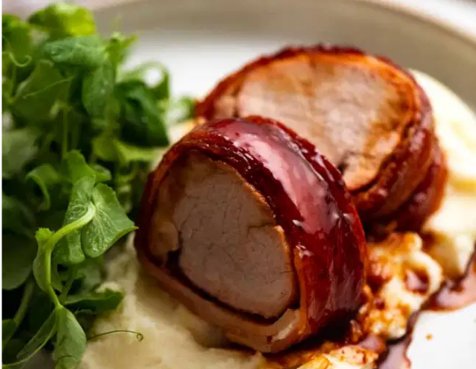

Bacon Wrapped Pork Tenderloin
Home

Four magic words: Bacon Wrapped Pork Tenderloin
It’s one of those gem recipes that is so good and yet so easy that you almost don’t need a recipe. You literally just sear the pork, wrap in bacon, brush with honey and then roast.
Besides the tiny number of ingredients, the other big thing this has going for it is that the bacon keeps the pork really juicy. Pork tenderloin is extremely lean – in fact it’s slightly leaner than chicken breast even. Did you know that? There’s a bit of food trivia for you!
So by wrapping it with bacon, the pork is protected which helps keep it extra moist when roasting. Plus, the fat from the bacon bastes the pork as it roasts which also adds to the juiciness.
Ingredients
- Pork tenderloin
- Bacon
- Honey
- Oil
- Salt
- Pepper
How to make Bacon Wrapped Pork Tenderloin!
- Season and tuck – Sprinkle the pork with salt and pepper, then tuck the thin tail end of the fillet under so the pork is more even thickness and fits into a skillet.
- Brown pork – Sear the pork over high heat in a little oil until browned all over, around 5 minutes. This is to give the pork a head start before we finish it in the oven. If we don’t do this, we end up with a thick band of overcooked pork surrounding the just-done centre. Pre-searing gives us an evenly cooked finish.
- Wrap in bacon – Lay bacon strips vertically on a work surface, with each piece overlapping slightly. Take the pork from pan (let it cool a little so you can handle). Place the pork on top of the bacon, at the end closest to you. Use a long knife to fold the bacon over the pork and roll the pork so it’s wrapped in the bacon.
- Seam side down – Roll the fillet over so it’s sitting seam side down. This helps the bacon stays in place. Now slide the knife under the pork, lift it and transfer back to the skillet (heat off, it’s now our baking dish).
- Drizzle with honey – To be honest, I don’t measure! I just eye ball it and squeeze it straight from the bottle onto the pork. Then roughly spread it with a spoon or brush – no need for completely coverage here because it mostly melts off during the baking. The glossy, deeply bronzed glaze is from brushing the bacon with the pan juices later.
- Bake for 20 minutes at 200°C/390°F (180°C fan).
- Baste – Remove from the oven and baste the bacon using the juices in the pan. There will be a decent amount of syrupy glaze pooled in the pan. Basting with it will make the bacon a beautiful deep bronze colour.
- Bake further 5 minutes (total bake time for 25 minutes) or until the internal temperature is 65°C (149°F). This yields medium doneness, which will have the faintest blush of pink inside with beautifully juicy flesh. To cook fully with no pink at all, just take it to 68°C (155°F) or so – around 3 more minutes baking time.
- Rest for 5 minutes, then baste one last time before slicing. Serve with remaining pan juices!